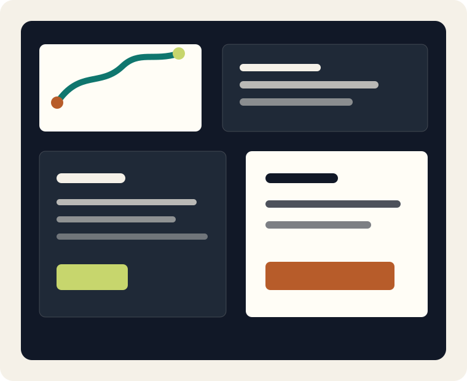
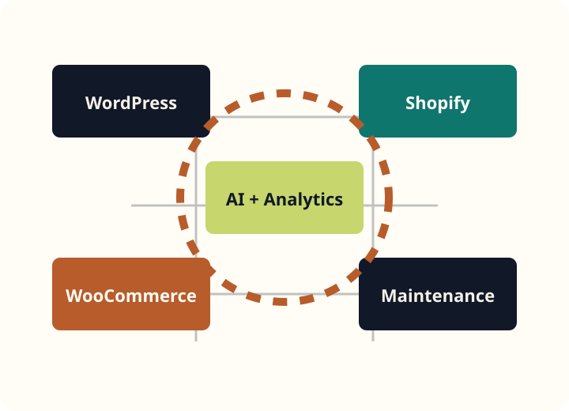

WordPress development
Custom classic themes, block/editor compatibility, plugin integration, hosting migration, performance, security, and maintainable page systems.
Civic Pixel Works
We build, maintain, fix, optimize, and scale business-critical websites with clean technical decisions, realistic launch plans, and measurable post-launch support.

Services
Clients come to us when a site needs more than a new homepage: broken checkout flows, unreliable tracking, fragile plugins, slow templates, unclear CMS ownership, and feature requests that need business judgment.
Custom classic themes, block/editor compatibility, plugin integration, hosting migration, performance, security, and maintainable page systems.
Storefront builds, product page optimization, collection strategy, cart improvements, checkout planning, app integration, and tracking.
Product architecture, shipping and tax configuration, inventory integrations, email templates, reporting, and speed improvements.
Updates, backups, security checks, plugin testing, uptime monitoring, content updates, layout fixes, and monthly reporting.
Emergency diagnostics for broken sites, slow pages, plugin conflicts, checkout failures, tracking issues, DNS, hosting, and migration problems.
AI assistants, lead qualification, CRM handoff, GA4, GTM, conversion events, call tracking, PageSpeed, and Core Web Vitals.
WordPress and Shopify specialization
WordPress and Shopify businesses need support that understands the platform and the commercial path. We plan templates, product flows, tracking, editorial workflows, app/plugin risk, and launch sequencing together.

Website rescue and repair
We check backups, recent changes, hosting logs, DNS, SSL, plugin conflicts, theme errors, checkout behavior, forms, and tracking before changing production settings.
E-commerce growth
Product pages, collections, carts, checkout messaging, payment clarity, shipping expectations, subscriptions, and e-commerce events are reviewed as one system.
AI, analytics, and performance
Process overview
Example outcomes
These are fictional examples, not claims about real clients. They show how we frame problems, solutions, and measurable outcomes.
Problem: confusing WooCommerce variations. Solution: product architecture, checkout cleanup, and reporting. Outcome: fewer support questions and clearer order review.
Problem: app conflicts and unclear discounts. Solution: cart UX, app audit, and GTM validation. Outcome: cleaner campaign testing and fewer checkout surprises.
Problem: slow pages and broken forms after migration. Solution: diagnostics, hosting fixes, plugin cleanup, and form monitoring. Outcome: stable lead flow.
Maintenance plans
Plans can include updates, backups, security review, plugin testing, uptime checks, content updates, emergency positioning, and monthly reporting with next-step recommendations.
FAQ preview
Yes. We start with an audit and recommend repair, phased improvement, migration, or rebuild only after the risks and business priorities are clear.
No. This theme and preview use local assets only. Any client AI integration is planned separately with clear platform and privacy requirements.
Start here
We will turn it into a practical technical brief with scope, risks, deliverables, timeline, and support recommendations.